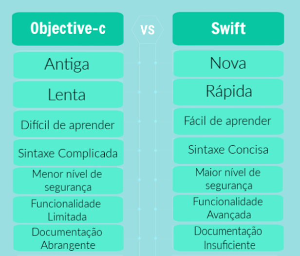

Vamos entrar em alguns detalhes da própria linguagem. O Swift é mais seguro devido à sua tipagem estática e ao uso de opcionais. No Swift, se o seu código exigir uma string, os recursos do Swift garantirão que seu código receba uma string e não outro tipo, como um int. Isso, obviamente, depende se você estiver usando a linguagem como ela é pretendida e não forçar a desembrulhar tudo.
Outra grande característica do Swift é a sua sintaxe. Especialmente em comparação com Objective-C. A melhor palavra para descrever a sintaxe seria "sucinta". Não há necessidade de ponto-e-vírgula, chamadas para auto ou parênteses em torno de declarações. Parece que você está pulando um monte de coisas que você realmente não precisa de qualquer maneira. Isso pode tornar o processo de digitar muito código “fluir” melhor.
Algumas pessoas dizem que isso leva a melhorias na velocidade de desenvolvimento, mas eu não diria exatamente isso. A necessidade contínua de desdobrar objetos para cumprir com a segurança do tipo Swifts compensa os ganhos de desenvolvimento que vêm com a sucessão.
O Swift também tem um monte de ótimas opções de controle de fluxo com guarda, if-let, comandos avançados, repeat-while e adiamento. Eu gosto de todas as diferentes opções porque permite que as pessoas controlem o fluxo de seu código de uma maneira que faça sentido para elas. Muitas pessoas odeiam defers mas guardas de amor e vice-versa. Não importa realmente o que você gosta ou não gosta, mas as opções estão lá e você pode codificar da maneira que lhe parecer melhor.
Não posso esquecer todos os recursos de programação funcional, como filtro, mapa e reduzir. Isso é ótimo para lidar com coleções e é útil com bastante frequência.
Considerando que, em Objective-C, o controle de strings, a divisão de classes e a concatenação de strings exigem mais codificação e envolvem escrever declarações aborrecidas. No Swift, a duração da codificação é drasticamente reduzida devido à introdução de mais operadores. Além disso, a necessidade de lembrar o token é reduzida com a interpolação de strings, onde os fatores podem ser inseridos diretamente na linha da string. A probabilidade de um aplicativo travar devido a uma falha na solicitação é reduzida com a estrutura de inferência de tipo.
Swift tornou-se menos exigente para ler e compor o código e parecer uma tonelada como inglês simples Com sintaxe limpa. A evacuação de todas as convenções legadas, como o suporte para explicações condicionais, ponto e vírgula para as linhas finais, aninhamento de chamadas técnicas dentro de chaves quadradas, símbolo @ e realmente mais, tornou a linguagem bastante expressiva e o código explicável. No Swift, o resumo isolado de vírgulas de parâmetros dentro de um gabinete é utilizado para chamadas de função e técnica para separar a sintaxe, pois os engenheiros de software Java, C #, C ++ ou Python podem ler e usar o Swift sem muito esforço.
Na criação de um aplicativo executável usando o Objective-C, é necessário manter dois registros de código em outro para melhorar o tempo e a eficiência da construção. No entanto, o legado da necessidade de dois documentos de código foi descartado pelo Swift com compiladores X-code e LLVM. Esses compiladores descobrirão as dependências, executarão formulários incrementais e combinarão o cabeçalho Objective-C de uso (.h) e os registros (.m) em um registro de código (.Swift) automaticamente. Nessa linha, a Swift minimiza os empreendimentos monótonos, a carga de trabalho e a contabilidade. Assim, os programadores de software terão mais oportunidade de se concentrar na criação lógica e na mudança de qualidade de código. Após um ano de lançamento, a linguagem de programação avançada Swift foi declarada como open source. O anúncio tornou a linguagem mais proeminente e extremamente utilizada em diferentes estágios ou como infraestrutura de back-end.
Além disso, o feedback da comunidade e a ajuda dos designers contribuíram de forma inestimável para as mudanças na linguagem. O mais provável é que a linguagem rápida tenha muitas vantagens sobre o Objective-C. A linguagem foi dispensada pela Apple, mantendo em mente o futuro desenvolvimento de aplicativos iOS e seus destaques fizeram com que os desenvolvedores de aplicativos iOS fizessem uso do código Swift durante o desenvolvimento do aplicativo.
